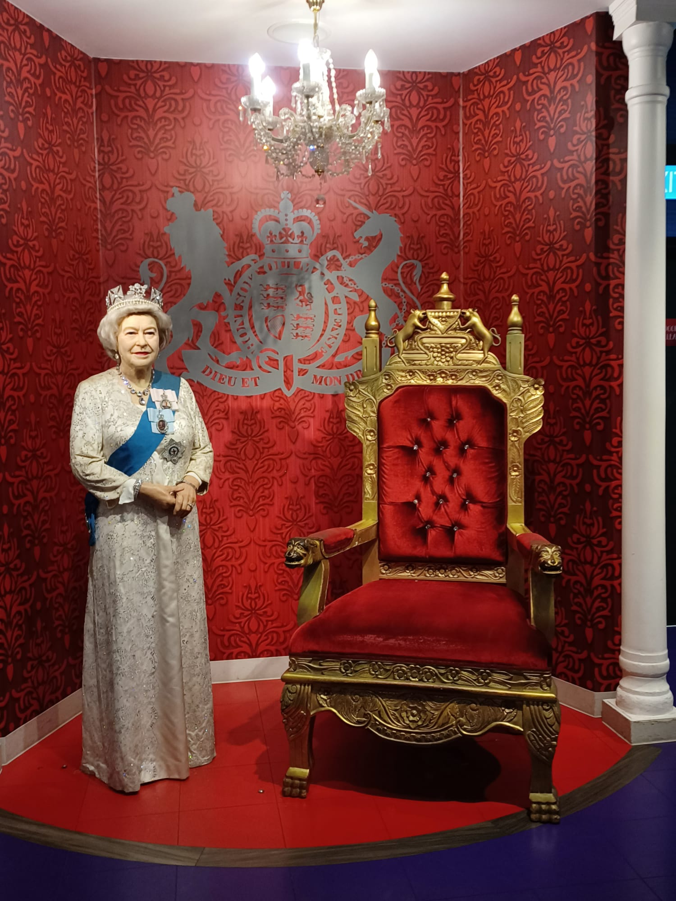

The Madame Tussauds wax museum was first established in London in 1835, and its Singapore branch opened in 2014. The museum houses wax figures of various personalities, ranging from politicians to pop celebrities. Check out the video to see how Stefanie Sun's wax figure was made!
The Madame Tussauds wax museum is definitely unlike other museums given that its focus is the lifelike figures crafted with precision. The wax figures are grouped according to categories. For instance, for the History and Leaders section, we have figures of Nelson Mandela, our founding Prime Minister Lee Kuan Yew and Queen Elizabeth. Another interesting section would be Sports, featuring Yao Ming, David Beckham and Feng Tianwei.
When I first decided to check out the Madame Tussauds wax museum, I wondered if it would be boring to just walk through a place with wax figures, thinking the highlight would probably only be taking photos with these figures. What surprised and intrigued me was, therefore, how there were some interactive and educational elements. For example, in the Images of Singapore section, we are greeted by figures of Stamford Raffles, samsui women, and even a letter writer. Accompanying these figures are a description of some of their contributions to Singapore. This allows the visitor to appreciate the historicity behind these wax figures, and the visual aid to understanding history certainly augments one's historical knowledge. I came out of the museum having had loads of fun made possible by the creative ways the museum chose to present the wax figures. You can sit on the throne next to Queen Elizabeth or stand at the podium next to President Barack Obama. There was even a boat ride - the first ever Madame Tussauds one - which reminded me of the rides at Universal Studios!
While there are no food options within the museum itself, its prime location within Sentosa means there are plenty of food places in the vicinity. Better still, spend about 2 to 3 hours at Madame Tussauds before heading to other nearby attractions like Universal Studios or the SEA Aquarium!
Madame Tussauds Singapore is located at 40 Imbiah Road Imbiah Lookout, Sentosa Singapore 099700, and is open from 10am to 6pm daily, with the exception of Tuesdays and Wednesdays when it is closed. Standard tickets start from $30 when purchased online. You may visit their website for more information.